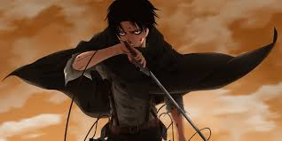

About Levi
Levi Ackerman (リヴァイ・アッカーマン Rivai Akkāman?), often formally referred to as Captain Levi (リヴァイ兵長 Rivai Heichō?), is the squad captain (兵士長 Heishichō?, lit. "leader of the soldiers") of the Special Operations Squad within the Survey Corps and is widely known as humanity's strongest soldier.
Levi. Levi Ackerman (often incorrectly romanized as Rivaille) is the tritagonist of the anime/manga series Attack on Titan. He is a Captain in the Survey Corps, known to be the strongest soldier alive. He has a harsh and unsocial personality, but is well-regarded by his subordinates and he cares about their lives.
Levi, the strongest human on earth
- he's cute
- he's cool
- he's trying to kill all titans
Levi's Slaves
Levi has some slaves, which is super obedient to him. Eren was the most obedient slave, but now he's gotten rebelious.